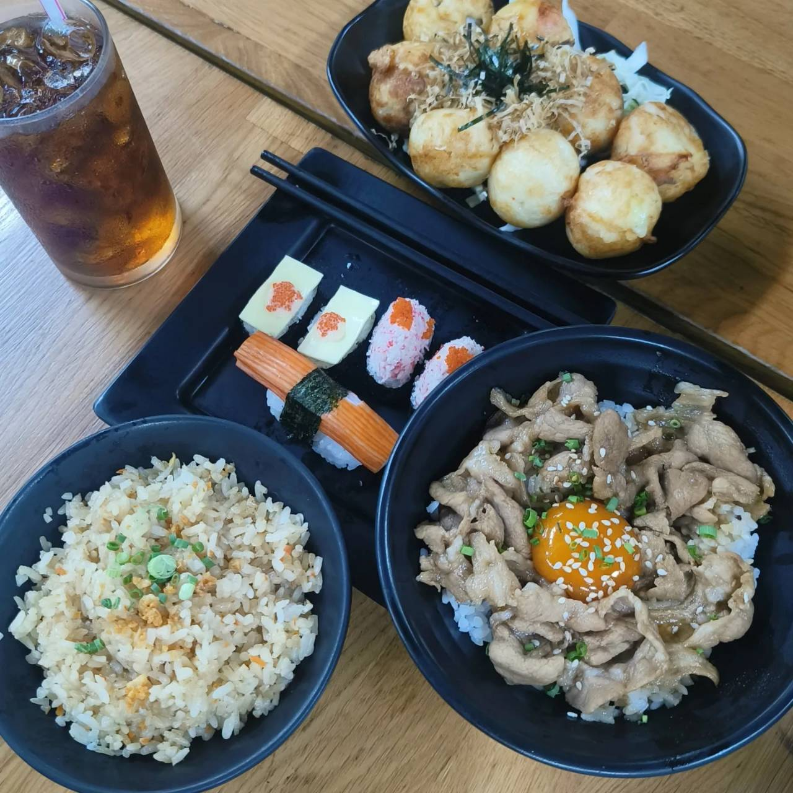

ซูชิอรทัย
ซูชิชื่อดังของวังหลัง อดีตเคยเป็นร้านดังมากๆ เป็นร้านซูชิถูกสุดๆชิ้นละ 5 บาท และเล็กว่าร้านนี้เป็นต้นแบบของซูชิตลาดนัดในปัจจุบัน จากร้านเล็กขยายเป็นร้านใหญ่ เมนูก็หลากหลายเหมือนร้านอาหารญี่ปุ่นตามห้างหน้าร้านมีซูชิให้คีบเองตามใจชอบ ถ้าทานที่ร้านก็สั่งที่โต๊ะได้เลย นอกจากนี้ก็มีข้าวหน้าต่างๆ และทาโกะยากิที่คนชอบสั่งกลับบ้าน